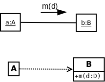

| Version# | Date | Description | Author
|
|---|
| 0 | 2005-01-03 | Used boiler plate to make template | RJB
|
| 1 | 2005-02-04 | Added Book Section Headers | RJB
|
| 2 | 2005-02-10 | Adding notes and questions | RJB
|
| 3 | 2006-02-02 | Updates | RJB
|
| 4 | 2007-01-10 | Add link to project | RJB
|
| 5 | 2007-02-07 | Added reference on messages | RJB
|
| 6 | 2008-02-05 | Made some small improvements | RJB
|
| 7 | 2009-03-04 | Found messages in the SSD | RJB
|
| 8 | 2009-03-23 | New Exercise on Code and Interactions | RJB
|
| 9 | 2010-03-16 | New Exercise on Code and Interactions | RJB
|
| 10 | 2011-02-05 | Expanded notes on Code and Interactions | RJB
|
| 12 2013-01-23 | Added the darts and dart board analogy DCD | RJB
|
- * A visual aid for thinking about how a set of objects work.
Also a way to record the results of thinking.
- ** Two formats, say samething in different ways. Both have advantages
and disadvantages. Learn Both. Q5
- *** Learn to translate between sequence diagrams and communication diagrams. Q5
- * You can use them to explore what should happen when ANY operation
is applied to any object.
- * Think in terms of a basket-ball game: messages are passes.
The players are objects. The ball is with the object that is active.
- * Review the formats for messages and returned objects.
[ 08.html#Messages ]
Q5
- * Think in terms of an atomic cloud chamber: a particle comes
in and collides with another particle.... and a spray of particles
and interactions are triggered off.
- * Demonstration
[ Minicalc.png ]
(design)
[ Minicalc.Cards.html ]
(descriptions of objects)
and
[ Minicalc.cpp ]
(C++ code).
- **** Each incoming message in an interaction diagram maps to a header for a
member function of the class.
- **** Each outgoing arrow maps to a call of a member function of the class.
- *** The activity when a message arrives maps to the body of the member
function in the class.
- * Interaction diagrams are used to design the internal classes of a system. One message
on the SSD triggers off a lot of activity between the objects inside
the System. These diagrams help you work these out. The interactions
drive the design of the classes inside the system.
- *** Each message in an SSD has no more than one set of interactions.
- *** Messages in an SSD have data that is mostly alphanumeric. In a design
the data often includes objects. Commonly, an object can pass itself to
another object. These are actually pointers!
- * Treat this chapter as a reference manual of notations.
- + Looking ahead: we take each step in the SSD and work out a set of interactions
that do what is needed.
[ UC2Code.png ]
- + Interactions lead directly to the Design Class Diagram -- -- --(DCD)
for the software.
Many interaction diagrams are summarized by each DCD.
You can imagine the relation between the interaction diagrams and the DCD
as being like the relation between a set of darts and a dart board. Each dart
has to land in a good part of the board... the arrows in aninteraction diagram
are the darts... and the object life line that they point at tells you which part
of the dart board/DCD they should be sticking in.
- + Design is easier if you know what is true before the operation and what must be
made true before it it complete. So,
Operation Contracts
make designing objects easier.
An SSD is a very special kind of sequence diagram:
- It shows actors (external entities). These do not appear on normal
sequence or communication diagrams.
- It has a single object that is always called ":System".
- We do not show activations.
- Messages+data flow from the primary actor into the System.
- Data is returned from the System to the primary actor.
Interaction diagrams can also show what goes on INSIDE a system as it
responds to a message. These have MANY OBJECTS.
An SSD is a sequence diagram with one primary actor
and an object called ":System".
If the object is called ":System" and it is the only object.... then the
diagram is a SSD. Else it is not.
Semantics: SSDs show the sequence of events between an actor and the whole system.
A sequence diagram should show the objects inside the system doing something.
- *** 15.1 Two forms of interaction diagram:
sequence
- diagram and
communication
(once called
collaboration
)
diagram.
- These diagrams give you 90% of the code. For example Diagram 15.3 and 15.4 both
show us that the class Register has an operation called makePayment:
void Register::makePayment(Money cashTendered)
{
sale->makePayment(cashTendered);
}
we might deduce the existence of the attribute sale that refers to a Sale as well.
- *** 15.2 Tracing interactions is more important than most novices think.
- * 15.3 Notation for objects. name : class, <<metaclass>>
Each incoming message describes the header of a function. Outgoing messages
describe the contents of the body of a function.
- * Examples
[ search?cat=img&cs=iso88591&q=sequence+diagram&rys=0&itag=crv ]
- 15.4 Basic Sequence Diagram Notations:
- *** message, reply/return, (Q5)
[ 08.html#Messages ]
- *** reply = message (data) (Q5)
Common error -- forgetting data
- *** reply = message (Q5)
- ** message to self
- ** creation, destruction (><) (Q5)
- ** alt(Q5), loop(Q5), opt(Q5), par, region
- +++ loops include counting loops and loops that use iterators to
send messages to a set of objects one after another.
- ** [condition], [else]
- * action boxes (action)
- * nesting, ref, sd
- *** <<metaclass>>
- * polymorphism (more later)
- * asynchronous vs synchronous calls, active objects,...
- *** Found messages -- the trigger for a set of interactions.
Notice the notation!
- **** Each
activation
(tall and thin box) maps to the body of a member function in the code.
- ++ Common technique: an object p will send a message to object q that includes
p as data
doSomethingForMe(p)
and q will respond by sending requests and data back to p by using ps own functions.
An example of the
Hollywood Principle
-- "Don't call us, we will call you!"
- 15.5 Basic Communication Notation:
- **** Links + Messages(Q5)
- *** One link -- MANY messages.
- ** create, (Q5)
- **** sequence numbers: complex 1, 2, 2.1, 2.2, 3...(Q5)
- ** conditions, iteration(Q5)
- * <<metaclass>>
- * synchronous and asynchronous
- ** Found messages -- the trigger for a set of interactions.
Notice the different notation.
- **** It is harder to work out the precise code for a function from a communication
diagram.
It doesn't have explicit activations and the notation for control structures
is primitive.
The numbers tell you what function is being defined.
A message with number a.b....c.d indicates that it's operation is
called as a result of the message a.b....c being sent. For example
a message numbered 1 will invoke a function whose body sends messages
1.1, 1.2, 1.3, and so on. And 1.2 will call 1.2.1, 1.2.2, 1.2.3. So the
sequence of calls will be: 1, 1.1,1.2,1.2.1,1.2.2,1.2.3,1.3,... for example.
- +++ Sequence and Communication diagrams are equivalent. Learn to
map between them (Q5)!
- +++ Sequence and Communication diagrams describe code. If a message
m(d) is sent from an object of class A to an object of class B:

then in some method in A there must be a an object b:B and a call
b->m(d)
(C++ code)
b.m(d)
(Java).
Also in class B there must be a operation
m(d:Data):ReturnedObject
(UML)
- +++ It is best to analyse one single "found" message at a time.
- +++ Assume that for any design class A we have classes like vector<A> and
list<A> without having to draw any special classes. In Design Class Diagrams
multiplicities (example "*") indicate the use of vectors, lists, etc. .
Also we presume that we have iterators that can move accross the elements
in these lists, vectors, etc. . Common notation
object_name : vector<Whatever>
for example. Many would then write things like
[ for i=0..object_name.size ] .... object_name[i]...
but I prefer
[ for item in object_name ] .... item...
We also presume we can write code to insert and delete items in vectors, lists, etc.
A message like
add(newItem)
can be sent to a vector or set of similar Items and do the obvious thing.